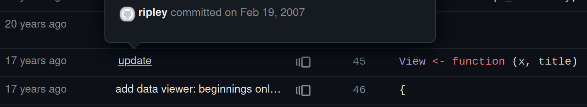
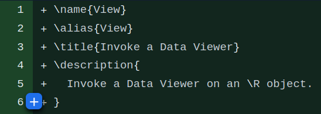
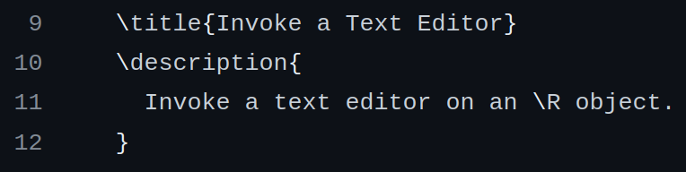

My first thought on reading this was that View() in RStudio is built to mask the View() function from utils, and so capitalizes the V because utils capitalized the V. Things are the way they are because they are the way they are, yet again.
But of course, that’s not the actual question – not only did David specify he’s talking about the function in R, not in RStudio, but of course someone decided that utils should capitalize the View() function as well. And this is weird! There are not that many functions in base R that start with a capital letter:
Functions that start with R or S, capitalized because it’s the name of a programming language;
Functions that start with URL;
View()by itself!
Update:
A few minutes after publishing, Konrad Rudolph points out on Mastodon that there are plenty of functions in the base package itself that are capitalized and don’t match these rules:
One of those is Filter(), which I literally used in the original code chunk and somehow didn’t notice started with a capital letter.
These functions fall into a number of other groups – functions for working with complex numbers, for functional programming and recursion, for setting and getting system information and variables, group generic functions, and a few proper nouns and acronyms like “C” and “RNG”. It’s still not common – 77 out of 1268 objects in the base namespace start with a capital letter – but it’s more common than in recommended packages.
< / update >
But even with that said, View() is the only function in recommended packages that starts with a capital letter that’s not named after a proper noun.1 And it’s been weird for a long time. The original version of the function was also capitalized when it was added by Professor Brian D Ripley way back in 2007:

Now here’s where we enter the world of wild speculation. Because if we look at the documentation for View(), we can see that this function is meant to “Invoke a Data Viewer”, with “Data Viewer” capitalized like a proper noun in both the function title and description:

This isn’t a universal style. If we look for instance at the documentation for edit(), which pre-dates View(),2 we can see that “text editor” is capitalized in the title but not in the description:

So this makes me suspect that Data Viewer here is being used as a proper noun. This wouldn’t be a unique usage; for instance, the RStudio user guide also describes its viewer as a Data Viewer, capitalized, and a search for “Data Viewer” suggests the phrase is capitalized something like 2/3 of the time on public websites. I have absolutely no knowledge of the tech jargon of 2007, or of the proper styling of “data viewer”,3 but it does seem like it’s sometimes a proper noun.
So, to wildly speculate just a little further: is View() capitalized because “Viewer” was capitalized, at least back in 2007?
Now, here’s a decent piece of evidence against this conjecture: the details section of the View() documentation, added at the same time as the title and description,4 doesn’t capitalize the phrase “data viewer”:
So there’s one guess: maybe View() is capitalized because, like the functions starting with R and S and URL, it’s named after a proper noun. Things are the way they are because they are the way they are, yet again.
If anyone knows more, though – or feels like asking Professor Ripley – please drop me a line. I’d love to know the actual answer.